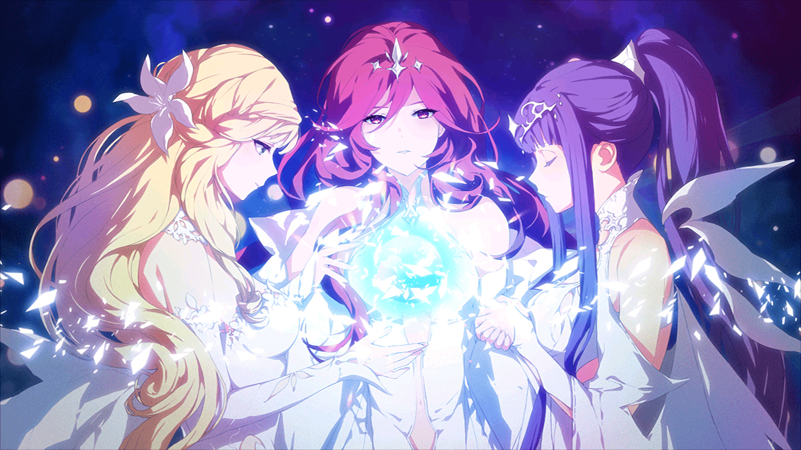
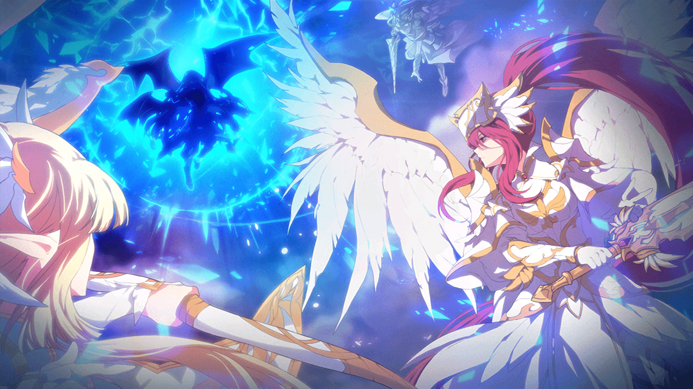
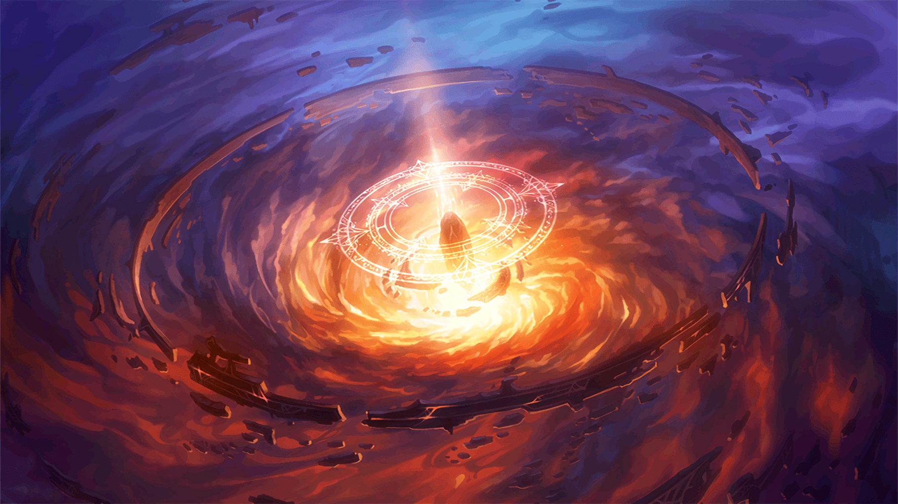
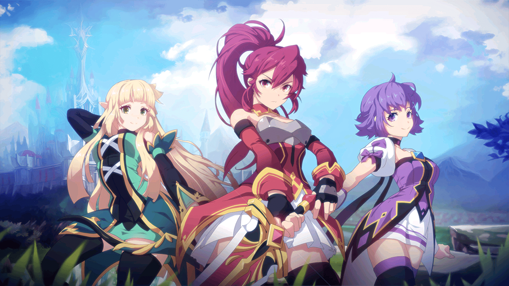
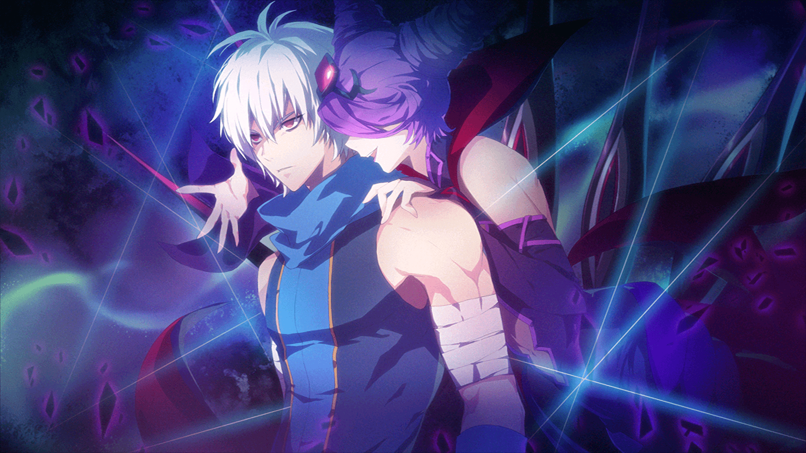
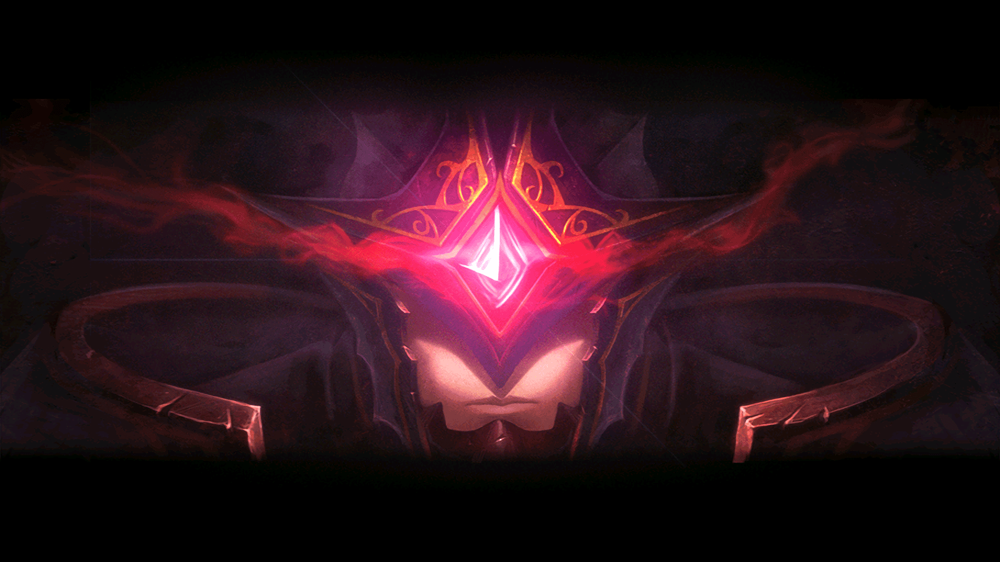

As Três Deusas desceram sobre o centro do continente de Arquimídia, onde fundaram o Reino de Calnat, cujo brilhante civilização mágica floresceu por milhares de anos. Este foi o ínicio do 1º Ano Divino.
O demônio Heitaros do partido de demônios extremistas invadiu Ernas, e as Três Deusas luataram para impedi-lo. Durante a guerra, Heitaros perdeu grande parte de seus poderes e sua posição no Mundo dos Demônios. As Deusas também foram enfraquecidas e não puderam mais continuar naquele mundo.
O Primeiro Ministro do Reino de Calnat, Bardinar, falhou em absorver o poder divino do Martelo de Ernasis, causando uma explosão gigantesca que, infelizmente, levou a gloriosa civilização de Calnat desaparecer para sempre.
Como um espírito maligno, Bardinar tomou posse da alma do guardião do Templo de Xênia, Astaroth, e possuiu seu corpo.

Após terminarem seus estudos no exterior, a Princesa de Canaban e companheiros estavam retornando para o
reino quando foram atacados por Astaroth, além de invocar um feitiço de demonização na amiga da princesa
e guarda real, Karina.
Enquanto se transformava em um demônio, Karina foi declarada a principal culpada do incidente. Diante da
dificuldade de encontrar qualquer pessoa que acreditasse nela, o desespero de Karina se transformou em
ódio pela raça humana. Ela jurou lealdade a Astaroth e passou a se chamar Cazeaje.
Sob o controle de Cazeaje, o Reino de Canaban declarou guerra contra o Reino de Serdin.
Por 5 anos a guerra se alastrou e o continente de Vermécia foi inteiramente banhado com sangue.
Como o objetivo de de perseguir a principal culpada pela Guerra dos Reinos, Cazeaje, a Rainha de Serdin chamou três garotas do Reino de Canaban, Reino de Serdin e Ilha de Eryuell e estabeleceu a GrandChase.
A GrandChase derrotou Cazeaje na península de Ellia, e Lass, que estava sendo controlado por Cazeaje, recuperou sua consciência e se juntou ao grupo.
No fim de uma batalha sangrenta contra a GrandChase, Astaroth tentou reativar o Martelo de Ernasis, porém, Grandiel conseguiu impedi-lo selando a si mesmo e Astaroth no Labirinto Fantasmagórico que havia criado.

Existia uma profecia de que a paz iria voltar a Ernas com o sacrifício de 12 pessoas.
O grupo da GrandChase que havia se reunido graças à profecia lutou contra Veigas, o Emissãrio da
Destruição, que veio para destruir Ernas. Entretanto, durante esta batalha, Veigas percebeu que a
profecia era falsa.
No fim da Profecia dos 12 Discípulos, a Torre da Extinção apareceu. Lá dentro, Cazeaje e Elscud
esperavam pela GrandChase.
Eles recuaram após o confronto com a GrandChase e, enquanto desapareciam, uma Fenda Dimensional abriu no
centro da Torre da Extinção.